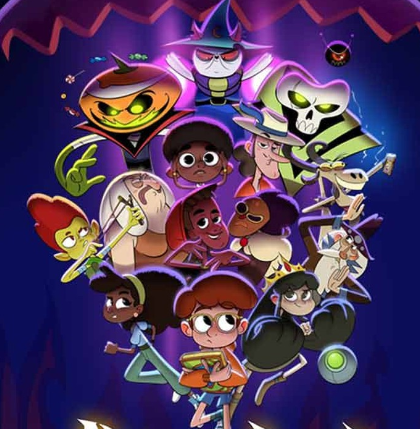
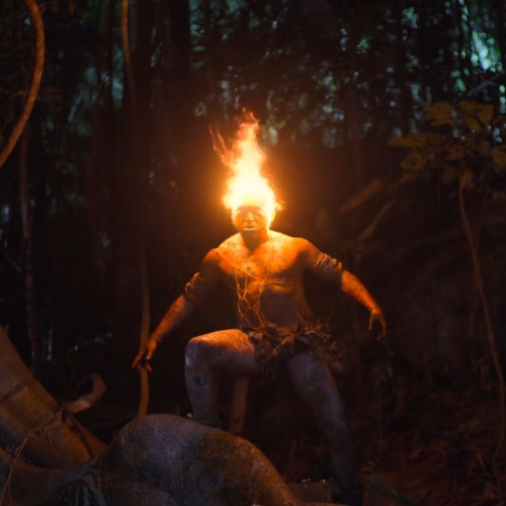
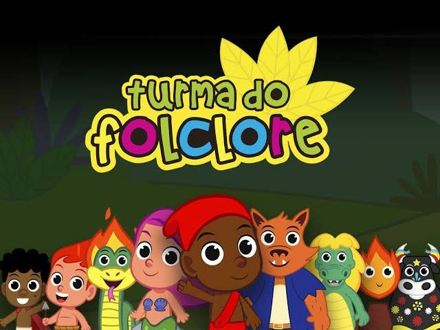

Original Netflix
Cidade Invisível
Após uma tragédia familiar, um homem descobre criaturas folclóricas vivendo entre os humanos e logo se dá conta de que elas são a resposta para seu passado misterioso.

Google Play Filmes e TV
Além da Lenda
Um livro sagrado reúne todas as lendas do folclore brasileiro, e é mantido em segredo e escondido na Montanha Coração do Brasil, que só é revelada uma vez por ano, justamente no dia 31 de outubro, dia do Saci.

Youtube
Turma do Folclore
A Turma do Folclore é uma galerinha que faz parte da cultura e das tradições populares do nosso Brasil. Eles adoram brincar pela floresta e proteger a natureza. Venha se divertir com as músicas e conhecer um pouco mais das lendas dos personagens Folclore.